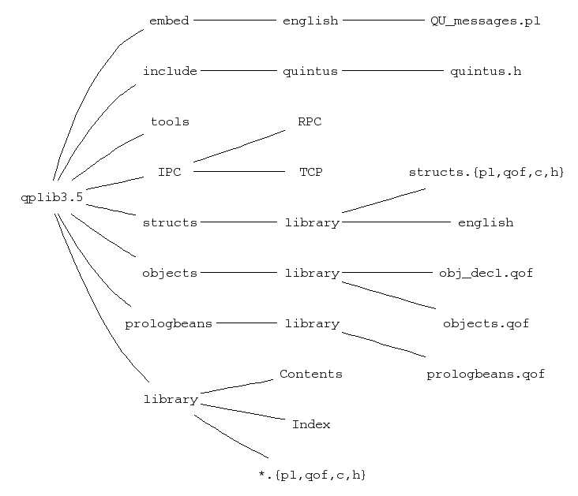
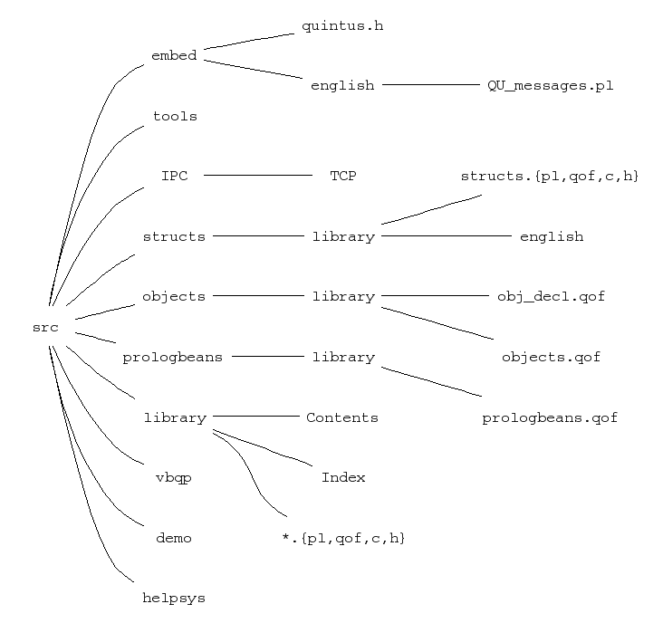

The Quintus Prolog Library directory (part of the installation directory
described in int-man) contain files written in
Prolog and C, which supplement the Quintus Prolog kernel.
The structure of the Library Directory differs slightly between UNIX
and Windows, as shown in the following figures.

qplib3.5
srclibrary
tools
structs
objects
prologbeans
vbqp
IPC
include
<quintus/quintus.h>, a header file containing
#defines, typedefs, struct definitions, etc., which are needed to
compile C code that needs to call API functions or use
Quintus data structures. Under Windows, the include directory is
placed directly under quintus-directory.
embed
The predicate library_directory/1 has predefined clauses for the
library and tools directories. These depend on the
file_search_path/2 definition of qplib. You can see these clauses
by typing listing. or listing(library_directory). after starting
up Prolog. This definition of library_directory/1 means that you
can refer, from within Prolog, to any file in any of these areas using
the form library(File). For example either (A) or (B) would load
the file lists.qof from the library directory.
| ?- [library(lists)]. (A)
| ?- load_files(library(lists)). (B)
Library packages are typically loaded by doing (C) if the package is not a module-file or if it is a module and you want all the exported predicates.
| ?- ensure_loaded(library(addportray)). (C)
See the descriptions of ensure_loaded/1 and
use_module/[1,2,3].
In addition to the loadable QOF files, source files (.pl or .c) are
provided for each package.